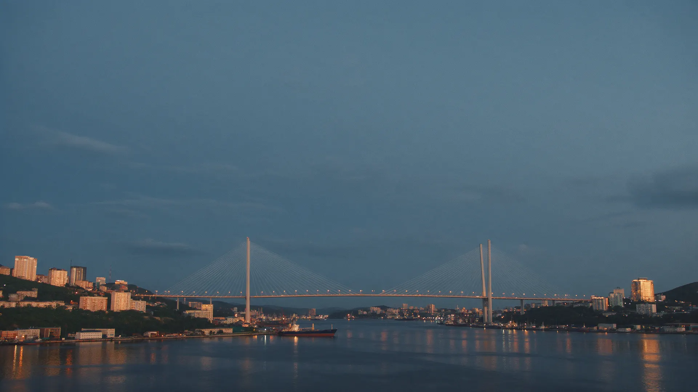
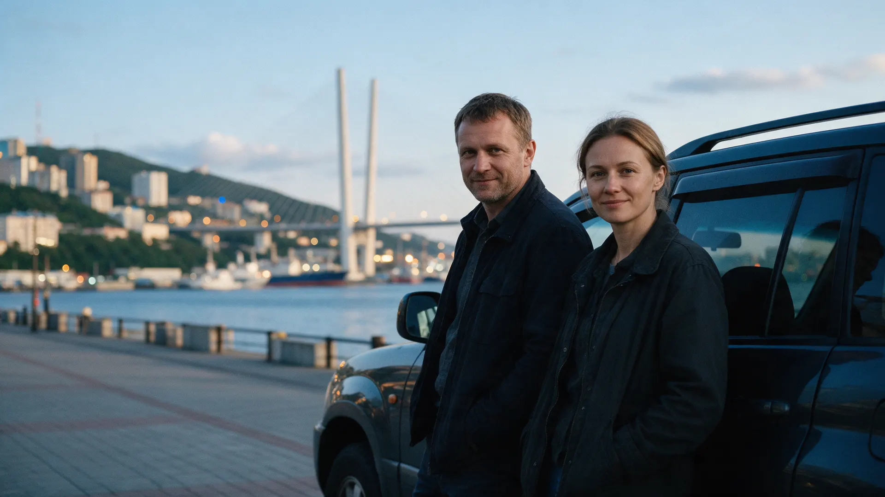
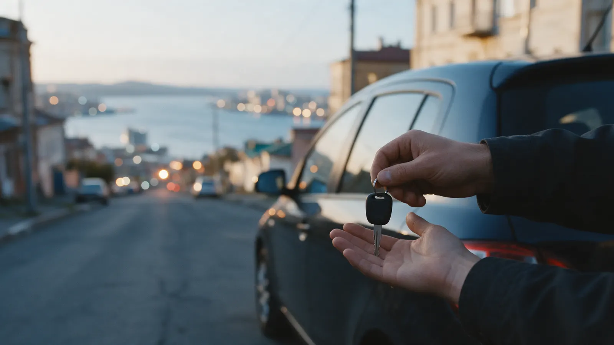
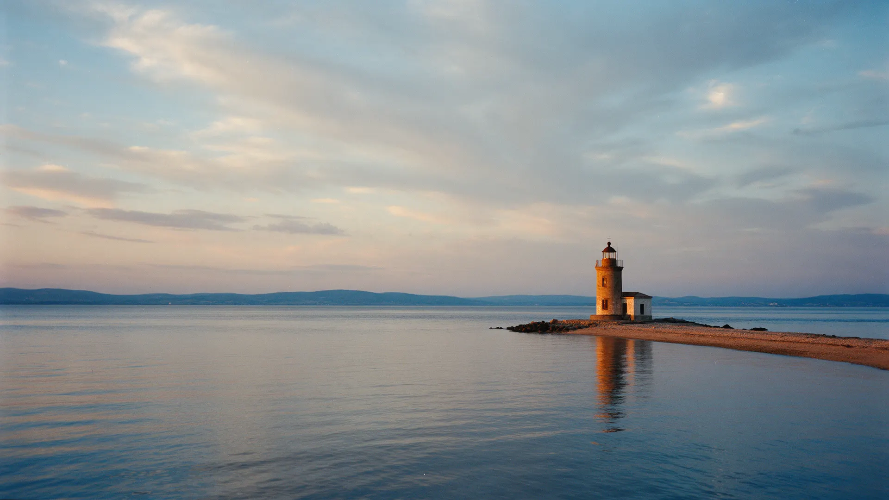

Авто из Азии: каждую сделку ведут сами владельцы
Корея, Япония, Китай. Вы познакомитесь с нами до договора, а не после оплаты.
Кому вы отдаёте деньги за машину, которую ещё не видели?
Посредник в переписке
Вы знаете только ник и аватарку. Если что-то пойдёт не так, найти человека будет негде.
Менеджеры меняются
Сегодня вам отвечает один, завтра другой, и каждый заново спрашивает, что вы хотели.
«Всё сложно, но мы разберёмся»
Вопрос про сроки и таможню, а в ответ общие слова. Что с вашими деньгами, непонятно.
Здесь за сделку отвечают два человека – владельцы. Их лица, имена и телефоны видны ниже, до всякого договора.

Алексей ищет и проверяет вашу машину
Выбирает варианты у проверенных поставщиков, смотрит авто сам и присылает вам фото и видео до оплаты.
Марина отвечает за бумаги и деньги
Договор до оплаты, таможня, постановка на учёт. Объясняет каждый шаг простыми словами.
Что вы получаете до, во время и после покупки
- Договор до оплаты
- Что покупаем, за сколько и в какие сроки – всё на бумаге, до первого платежа.
- Осмотр с фото и видео
- Вы видите машину глазами владельца раньше, чем вносите деньги.
- Один телефон на всю сделку
- Звоните владельцам напрямую. Без очереди менеджеров и без «перезвоним».
- Помощь после ключей
- Поможем с постановкой на учёт и ответим на вопросы, когда машина уже у вас.
Из Азии во Владивосток за пять шагов
- ПодборВыбираем машину вместе с вами
- Осмотр и выкупФото, видео, договор, оплата
- МореМашина идёт в порт Владивостока
- ТаможняРастаможка и документы
- КлючиВстреча во Владивостоке
Ключи – в руки, в вашем городе
Принимаем машину вместе: смотрим на месте, подписываем бумаги и фотографируем на память.

Знакомый город, знакомые лица, ваша машина.
- Золотой мост
- Русский мост
- Токаревский маяк
- Фуникулёр

Давайте познакомимся до договора
Напишите владельцам: ответят лично, без менеджеров и скриптов.
Написать владельцамДемо-проект: имена, телефон, ссылки и фото условные и будут заменены данными заказчика.